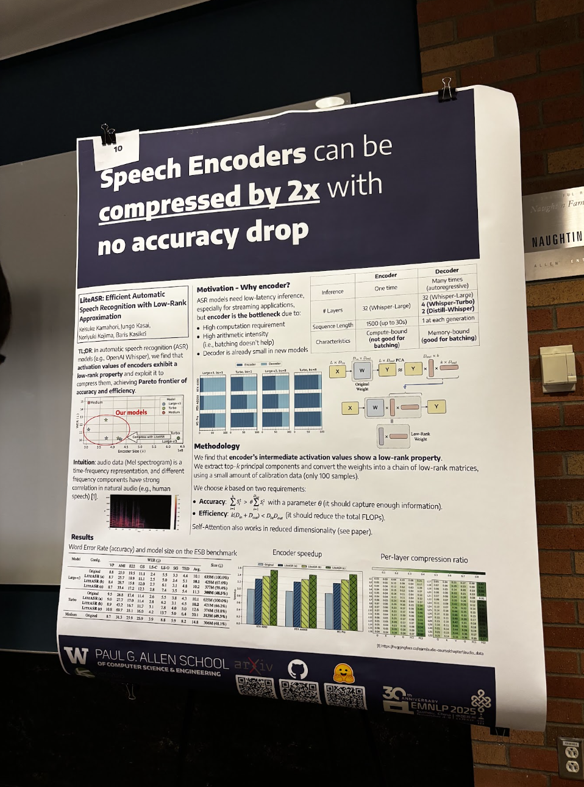
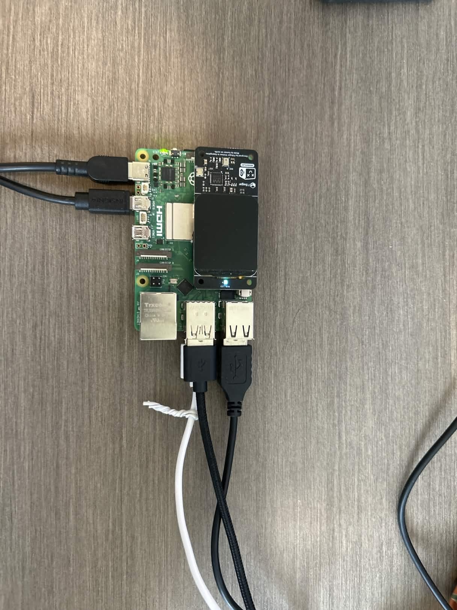
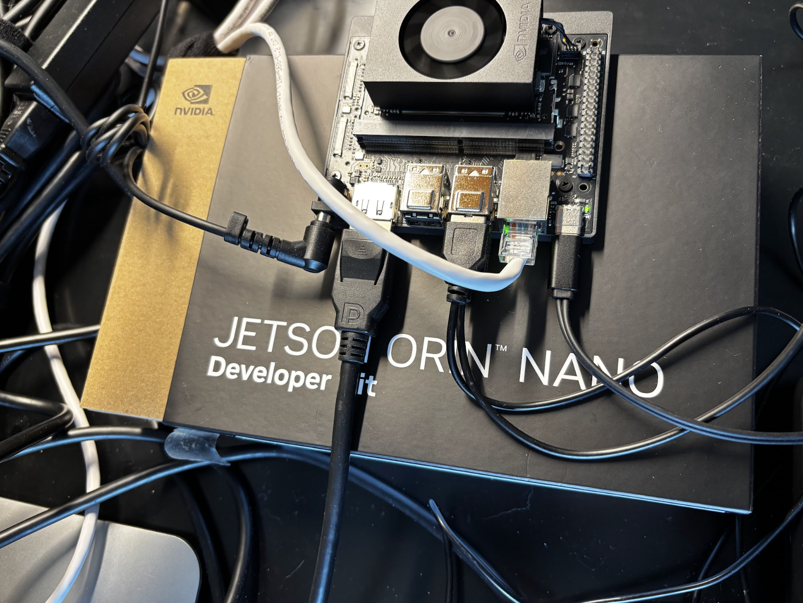
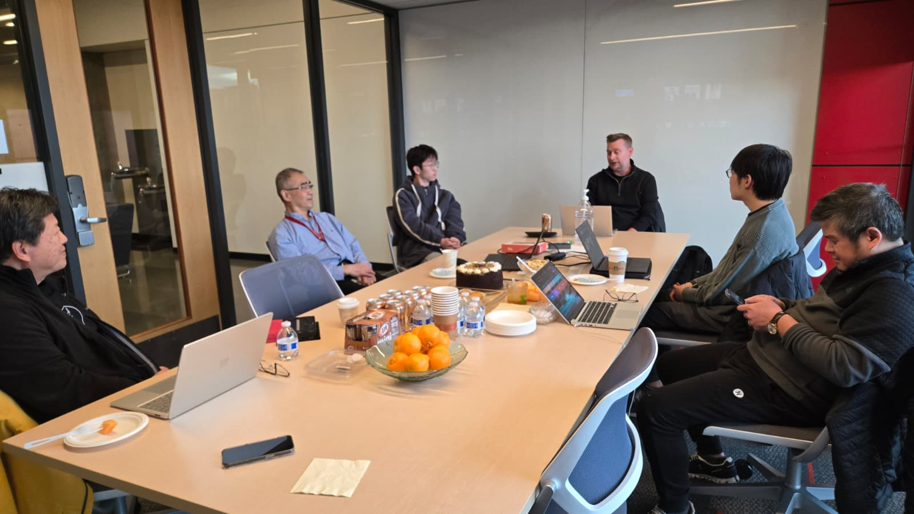

Imagine sitting in a classroom where the teacher's voice reaches you not through your ears, but through your fingertips — instantly, naturally, and without a beat of delay. For DeafBlind students at Helen Keller Indonesia, this vision is becoming reality through a system called Speech2Braille, developed by the team at AI4DeafBlind.org.
The Challenge: Bridging Silence in the Classroom
DeafBlind individuals — those with combined vision and hearing loss — navigate a world that is largely designed for people who can see and hear. In educational settings, this creates a profound communication barrier. Traditional approaches rely on tactile sign language interpreters or manual note-taking, which are slow, resource-intensive, and often unavailable in lower-resource environments like Indonesia.
At Helen Keller Indonesia, a leading school for DeafBlind students, the classroom setting is intimate by design: typically one teacher working with a small group of one to five students, gathered around a table, face-to-face. This closeness creates a natural opportunity for real, dynamic communication — but only if the right technology can bridge the gap between spoken language and tactile Braille.
The challenge the AI4DeafBlind.org team set out to solve was deceptively simple to state: convert a teacher's spoken Indonesian into Braille output, in real time, entirely offline, on affordable hardware.
The Technology: Fine-Tuning Whisper for Indonesian Speech
The core of the Speech2Braille pipeline is a fine-tuned version of OpenAI's Whisper Tiny Multilingual model — a compact, open-source automatic speech recognition (ASR) system that was chosen precisely because it can run on modest, affordable hardware without an internet connection.
The Research That Made It Possible: LiteASR

A critical intellectual foundation for the Speech2Braille pipeline came from within the team itself. Keisuke Kamahori, a Computer Science PhD student at the University of Washington and AI4DeafBlind.org team member, co-authored LiteASR: Efficient Automatic Speech Recognition with Low-Rank Approximation — a paper accepted to EMNLP 2025 (Main) as a collaboration between the University of Washington and Kotoba Technologies. The paper demonstrated that Whisper's encoder — historically the dominant computational bottleneck in ASR systems — could be compressed by more than 50% through low-rank matrix approximation, bringing a Whisper large-v3 encoder down to the scale of Whisper medium with negligible accuracy loss. This was not incremental progress: it established a new Pareto frontier for the efficiency-accuracy tradeoff in speech recognition.
For the Speech2Braille project, Keisuke's research was a direct proof of concept that powerful ASR could run efficiently on constrained hardware. If the encoder bottleneck — the very reason Whisper had long been considered too compute-intensive for edge deployment — could be tamed through principled compression, then running a fine-tuned Whisper model on a $150 Raspberry Pi 5 was not merely aspirational. It was achievable. LiteASR's insight that intermediate activations in Whisper's encoder exhibit strong low-rank structure gave the team the theoretical and practical confidence to pursue a real-time, fully offline pipeline — one where every spoken word from a teacher in Yogyakarta could reach a DeafBlind student's fingertips in under one second, with no cloud, no compromise.
Starting Point: Whisper Tiny Multilingual
Whisper Tiny is the smallest member of the Whisper family of models. While powerful for many languages out of the box, its baseline performance on Indonesian — a richly diverse language with regional accents and informal registers — left significant room for improvement. The team measured an initial Word Error Rate (WER) of 47.95%, meaning nearly half of all recognized words contained errors. For educational use in a live classroom, this was far too high.
Phase 1: Indonesian Fine-Tuning with GigaSpeech2
To improve performance, the team turned to GigaSpeech2, a large-scale multilingual speech dataset that includes substantial Indonesian language content. This corpus provided thousands of hours of real-world Indonesian speech spanning diverse speakers, accents, and contexts — exactly the variety needed to make the model robust for classroom use.
The first fine-tuning run trained for 5,000 steps, bringing the WER down from 47.95% to 38.01% — a meaningful reduction, but still not sufficient for the clarity required in a real-time Braille feedback system.
Phase 2: Extended Training to Breakthrough Accuracy
Encouraged by the early gains, the team pressed further. Extending training to 100,000 steps proved to be the breakthrough: the Word Error Rate dropped to below 20%. This is a critical threshold — at sub-20% WER, the model captures enough of a teacher's speech for a DeafBlind student to follow the flow of a lesson, understand key concepts, and stay meaningfully engaged.
Word Error Rate: The Journey to Clarity
The End-to-End Pipeline
Speech recognition is only one piece of the system. The full Speech2Braille pipeline takes audio from a microphone, processes it through the fine-tuned Whisper model, and routes the recognized text to a refreshable Braille display — all in near-real time, running locally on the device.
Input
(Fine-tuned)
Processing
Translation
Braille Display
Why offline? Many Indonesian schools and communities lack reliable broadband connectivity. Running the entire pipeline locally — without any cloud dependency — means the system works consistently in rural and under-resourced settings, and keeps student data private. Targeting affordable hardware ensures the solution can scale beyond pilot programs to reach students who need it most.


The Social Impact: Closer Lessons, Real Connection
Technology is only transformative if it meets real human needs. At Helen Keller Indonesia, the Speech2Braille system was designed with a specific educational reality in mind: intimate sessions where a teacher and a small group of students share a table, engaged in a lesson together.
Before Speech2Braille, bridging the communication gap in these sessions required teachers to manually convey each concept through tactile sign language — a process that is deeply personal and valuable, but also effortful and slow. Every pause to sign a word broke the flow of the lesson. Complex explanations were difficult to deliver at the pace a sighted, hearing student might receive them.
"The immediate feedback allows us to stay in sync during the lesson. I can speak naturally, and the student follows along on the display without me having to pause and sign every individual word manually."
— Teacher, Helen Keller Indonesia (field test participant)With Speech2Braille active during a session, the dynamic shifts. The teacher speaks naturally. The student's fingers rest on the Braille display and read the teacher's words as they are spoken. Questions, answers, explanations — the full texture of classroom dialogue — become accessible in a way that mirrors how hearing students experience a lesson.
Importantly, the system is designed to enhance, not replace, the human connection at the heart of DeafBlind education. The small group format — one to five students around a table — remains central. Speech2Braille is a tool that frees the teacher to focus on pedagogy, relationship-building, and responsive instruction, rather than on the mechanical labor of translation.
Teachers who participated in field testing at Helen Keller Indonesia noted that having real-time Braille feedback during close-up sessions helps bridge the communication gap in a way that feels natural and unobtrusive. The system allows students to receive information directly through their fingertips, fostering a more immediate connection during daily lessons — one that previously required significant manual intervention to achieve.
Empowerment in practice: For DeafBlind students, access to a teacher's spoken words in real time is not a convenience — it is access to education itself. Speech2Braille turns every spoken word into a touchable reality, delivered at the speed of conversation.
Global Collaboration: From Seattle to Yogyakarta
The Speech2Braille project is a product of genuine international partnership — one that brings together AI research expertise, software engineering talent, and deep community knowledge across the Pacific.
The Team Behind Speech2Braille
- AI scientist and engineers based in the United States
- Interns from the University of Washington
- CS Professor from Washington State University
- Indonesian software engineers and developers
- Educators and staff at Helen Keller Indonesia
- DeafBlind students

This collaboration reflects AI4DeafBlind.org's core conviction: that the most meaningful assistive technology is built with the communities it serves, not merely for them. The Indonesian engineers on the team brought critical knowledge of local linguistic contexts, hardware constraints, and classroom realities. US-based team contributed expertise in ASR model architecture, fine-tuning methodology, and systems design. Interns from the University of Washington helped bridge research and engineering, gaining hands-on experience building AI systems that matter.
The field test at Helen Keller Indonesia was not simply a performance evaluation — it was a co-design process. Teacher feedback directly shaped decisions about how text is displayed, how quickly the Braille output refreshes, and how the system handles conversational Indonesian speech patterns.
Looking Forward: Two-Way Conversation
The Speech2Braille pipeline represents a foundational step toward a larger goal: real-time, two-way communication between teachers and DeafBlind students. The current system enables teachers to speak and students to read — a profound improvement. The next frontier is enabling students to communicate back, through Braille or other tactile input methods, completing the conversational loop.
AI4DeafBlind.org is actively working on this bidirectional capability, with ongoing research into Braille-to-text input, multilingual expansion beyond Indonesian, and hardware partnerships to bring the cost of the complete system within reach of schools across Southeast Asia and beyond.
The team is also exploring ways to improve robustness further — handling classroom noise, multiple speakers, and the natural informality of teacher-student dialogue — as the system moves from field testing toward broader deployment.
"Our goal is not just better technology — it is equitable access to education for every DeafBlind child, wherever they are. Speech2Braille is a step toward a world where geography and resources do not determine whether a child can follow their teacher's lesson."
— AI4DeafBlind.orgWhy This Work Matters
According to the World Health Organization, there are tens of millions of people worldwide with combined vision and hearing loss. In lower-income countries, where specialized interpreters and assistive devices are scarce, DeafBlind individuals face some of the steepest barriers to education and participation in society.
Speech2Braille is part of a broader movement to apply the rapid advances in open-source AI — particularly in speech recognition and natural language processing — to serve populations that have historically been underserved by mainstream technology development. The choice to use Whisper Tiny, a compact and openly available model, was deliberate: it keeps the system accessible to any organization with modest hardware, and it can be further fine-tuned by local teams as language data and compute become available.
By demonstrating that a WER below 20% is achievable in Indonesian with 100,000 fine-tuning steps on publicly available data, the AI4DeafBlind.org team has created a replicable blueprint that other languages and communities can follow.
Summary
Speech2Braille is the result of a principled commitment: that AI should work for everyone, including those at the intersection of disability and under-resourced educational environments. By fine-tuning the Whisper Tiny Multilingual model on Indonesian speech data from GigaSpeech2, and extending training to 100,000 steps, the AI4DeafBlind.org team reduced the Word Error Rate from nearly 48% to below 20% — a transformation in practical classroom usability.
The system runs entirely offline on affordable Raspberry Pi 5 hardware. It was field-tested at Helen Keller Indonesia with real teachers and soon to include the students. It was built by a team spanning continents, disciplines, and institutions. And it is designed not to replace the human connection at the heart of DeafBlind education, but to deepen it — one word at a time, read through fingertips.
Disclosure: This article was developed with the assistance of AI tools for structural and editorial refinement. The technical concepts and final review were provided by the author.